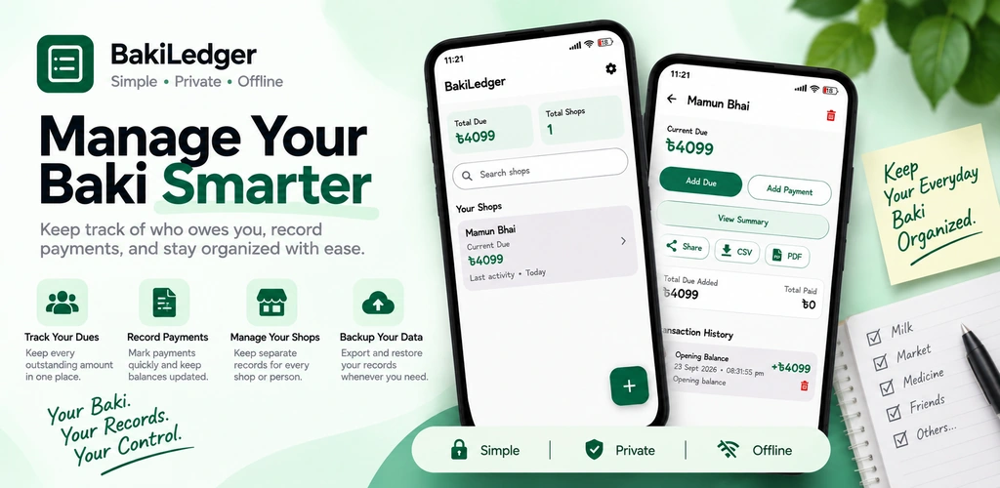

Manage Your Baki
Smarter.
Keep track of who owes you, record payments, and stay organized with a simple personal due tracker that works offline.
Simple · Private · Offline · Local records · Backup & restore · CSV/PDF export

Everything important, without the clutter.
The latest BakiLedger workflow keeps personal records focused: see balances, record activity, review history, and keep your data portable.
Dashboard at a glance
See Total Due, Total Shops, search shops quickly, and open any shop's current balance.
Clear transactions
Record Due or Payment with exact date/time and an optional note. Delete with confirmation and undo from the snackbar.
Portable records
Create JSON backups, restore with Replace or Merge, and export full data or shop-wise CSV.
Shop statements
Export a shop statement as PDF or share a text summary containing current due, total due added and total paid.
Shop contact
Save an optional phone number and quickly call or copy it from the shop screen.
Opening balance
Start with the amount already due before using BakiLedger, so your balance matches your real records.
Today summary
View today's added dues, payments, net change and the current due for a shop.
Download BakiLedger 1.2.
Install the Android app and keep everyday personal due tracking simple, local and portable.